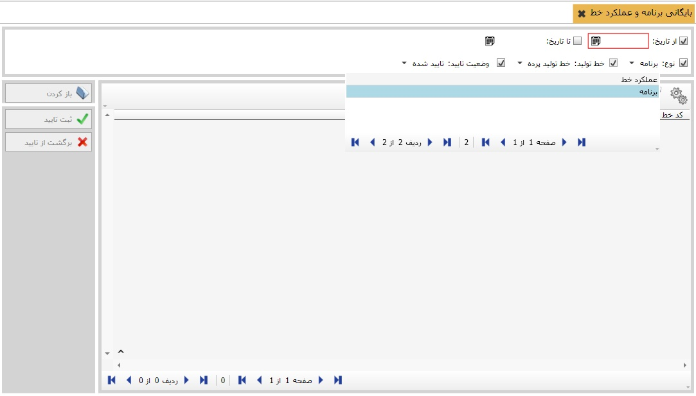

این امکان برای کاربران مهیا شده است که عملکرد خطوط را بایگانی نمایند. برای این منظور از منوی اصلی اطلاعات «بایگانی برنامه و عملکردخط» را کلیک کنید. .صفحه زیر نمایش ابزارها و امکانات این فرم می باشد لازم به توضیح است که امکان انتخاب بازه زمانی، نوع خط ، نام خط و وضعیت آن برای کاربران قابل انتخاب می باشد. علاوه بر آن امکان ثبت اطلاعات جهت بایگانی و برگشت از بایگانی اطلاعاتی نیز برای کاربران مهیا گردیده است.
